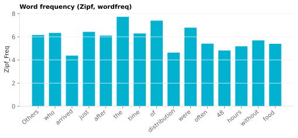

On this page
6.1.8Word frequency (Zipf, wordfreq)
Per-word lexical frequency on the Zipf scale, looked up from the wordfreq library's combined English list.
6.1.8.1What it is
Per-word lexical frequency on the Zipf scale, looked up from the
wordfreq library's combined English list. That list blends several
corpora — the SUBTLEX subtitle corpora (Brysbaert 2009) are a major
component, alongside Wikipedia, books, news, web, and social-media text
(see the wordfreq source inventory).
⚠️ Methods-section wording: cite these values as "Zipf frequency from the wordfreq combined English list (Speer et al.)" — they are not pure SUBTLEX-US norms, and will differ slightly from values looked up in the SUBTLEX-US spreadsheet.
Subtitle corpora track conversational / naturalistic frequency much better than book/newspaper corpora, which is why they anchor the blend and why wordfreq is a standard reference for psycholinguistic stimuli.
The Zipf scale (van Heuven 2014) is log₁₀(occurrences per million) + 3, calibrated so:
| Zipf | Per million words | Interpretation |
|---|---|---|
| 7–8 | 10,000–100,000 | Function words: the, of, and |
| 5–6 | 100–1,000 | Typical content words: house, run, important |
| 3–4 | 1–10 | Lower-frequency content: moustache, perimeter |
| 1–2 | < 1 | Rare words |
| NaN | — | Out-of-vocabulary (wordfreq's 0.0 sentinel is converted to NaN) |
6.1.8.2See it

6.1.8.3In your output
| token | Zipf_Freq Zipf (log10 frequency per billion words) |
|---|---|
| The | 7.73 |
| ornithologist | 2.26 |
| saw | 6.1 |
| a | 7.36 |
| quetzal | 2.01 |
| in | 7.27 |
| the | 7.73 |
| jungle | 4.12 |
| . |
6.1.8.4MATLAB
% Load the word-level table (one row per word)
T = readtable('word/zipf_features.csv', 'TextType', 'string');
T.Properties.VariableNames % every column in the file
head(T(:, {'token', 'Zipf_Freq'}), 10) % this feature's columns (first rows)
% Plot
w = T.upos ~= "PUNCT"; % words only
bar(T.Zipf_Freq(w)); xticks(1:nnz(w)); xticklabels(T.token(w)); ylabel('Zipf_Freq')
6.1.8.5How it's computed
zipf_frequency(word, "en") returns
Zipf = log₁₀(occurrences_per_million) + 3 [van Heuven 2014]
— equivalently log₁₀ of the occurrences per billion words, which is
how wordfreq states it. So a word that occurs 1 time per million words has Zipf = 3, one that
occurs 1000 per million has Zipf = 6, and so on. The +3 shift sets
the scale to start near zero for rare words and avoids negative numbers
in normal use.
6.1.8.6In the code
Source: sensi/extractors/word_freq.py:add_word_freq.
What the code does:
- Iterates over the word-level DataFrame row by row.
- For each row, if
upos == "PUNCT"→ emitsNaN(punctuation has no meaningful frequency). - Otherwise calls
wordfreq.zipf_frequency(row["lemma"], "en")and stores the result in a newZipf_Freqcolumn.
Why:
- Lookup keyed on
lemma, nottoken— collapses inflectional variants (running,runs,ran→run) so the value reflects the word's lexeme-level frequency rather than its surface form. Note that much of the EEG/reading literature uses surface-form frequency; if your analysis needs that, derive it from thetokencolumn withwordfreq.zipf_frequency(token, "en")directly. - PUNCT → NaN and OOV → NaN — wordfreq returns
0.0as an out-of-vocabulary sentinel, not a real Zipf value; propagating it would silently bias document-level means (a fake "Zipf 0" word). NaN follows the pipeline-wide "no value, never imputed" convention (cf. lexical norms). - wordfreq library over a hand-rolled SUBTLEX-US lookup —
wordfreqprovides proper Zipf normalization, wide vocabulary coverage, and a stable Python API; the trade-off is the multi-corpus provenance called out above.
6.1.8.7Library
from wordfreq import zipf_frequency
zipf_frequency("house", "en") # ≈ 5.61
zipf_frequency("perimeter", "en") # ≈ 3.84
zipf_frequency("zyzzyva", "en") # 0.0 (OOV sentinel → NaN in Zipf_Freq)
6.1.8.8EEG rationale
Word frequency is a well replicated lexical predictor of word-level
ERP responses: low-frequency words elicit larger N400 and longer
fixation times than high-frequency words (Van Petten 1990,
Dambacher 2006). Including Zipf_Freq lets you either (a) regress it
out as a covariate when isolating higher-order effects like surprisal
or semantic similarity, or (b) study frequency effects directly.
The Zipf scale was designed to be linear in psycholinguistic effects:
because Zipf is log₁₀(occurrences per million) + 3, the
well-replicated logarithmic dependence of reading time and lexical
decision time on raw frequency (Brysbaert 2009) becomes an
approximately linear dependence on Zipf. The N400 amplitude is
reliably modulated by frequency in the same direction — low-frequency
words elicit larger N400s than high-frequency words (Van Petten 1990,
Dambacher 2006) — though the exact functional form on N400 amplitude
is less well characterised than for reading time.
6.1.8.9Papers
- Brysbaert 2009 Brysbaert & New. Moving beyond Kučera and Francis: A critical evaluation of current word frequency norms and the introduction of a new and improved word frequency measure for American English. Behavior Research Methods 41(4), 977–990. doi:10.3758/BRM.41.4.977 — the SUBTLEX-US norms, a major component of
wordfreq's combined English list; establishes that the frequency effect on reading and lexical decision time is logarithmic in raw frequency (i.e. linear in Zipf). - van Heuven 2014 van Heuven, Mandera, Keuleers & Brysbaert. SUBTLEX-UK: A new and improved word frequency database for British English. Quarterly Journal of Experimental Psychology 67(6), 1176–1190. doi:10.1080/17470218.2013.850521 — introduces the Zipf scale.
- wordfreq Speer. wordfreq (software). github.com/rspeer/wordfreq — defines
zipf_frequencyas the base-10 log of occurrences per billion words, crediting the scale to Brysbaert. - Van Petten 1990 Van Petten & Kutas. Interactions between sentence context and word frequency in event-related brain potentials. Memory & Cognition 18(4), 380–393. doi:10.3758/BF03197127 — direct demonstration that less-frequent words elicit larger N400s than more-frequent words (modulated by sentence position).
- Dambacher 2006 Dambacher, Kliegl, Hofmann, Jacobs. Frequency and predictability effects on event-related potentials during reading. Brain Research 1084(1), 89–103. doi:10.1016/j.brainres.2006.02.010 — separating frequency and predictability ERP effects.